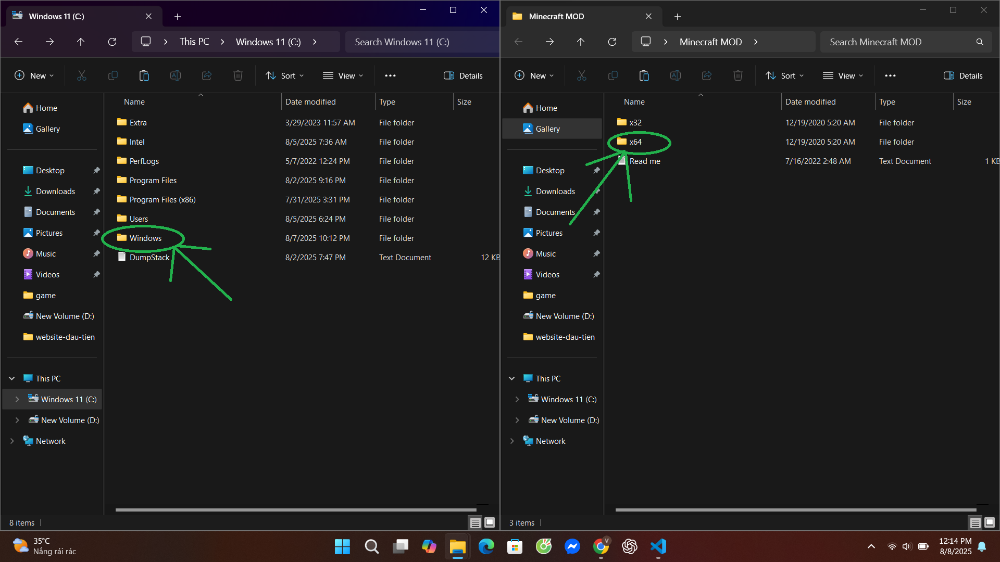

Chào mừng bạn đến với trang tải Minecraft.
Hôm nay chúng tôi sẽ hướng dẫn bạn cách tải và cài đặt Minecraft PE dành cho PC.
Đầu tiên bạn phải tải 3 file có tên là:
Các file mình để ở bên dưới.
Sau khi tải xong các bạn hãy giải nén file, sau đó cài đặt 10bit unlock.
Bước 1: Giải nén 2 file này
Bước 2: Mở file trong ổ C cùng file Unlock Minecraft PE. Chọn x64 (tuỳ máy)
Bước 3: Tìm và chọn system32 ở cả 2 file
Bước 4: Copy tên file từ file Unlock sang tìm kiếm ở file còn lại
Bước 5: Chọn đúng file và nhấn vào 10 bit unlock
Bước 6: Chọn Unlock và Delete
Bước 7: Kéo file Unlock vào thư mục bên kia
Vậy là xong 1 file unlock (system32). Làm tương tự với file syswow64 nhé!
Làm xong rồi thì trải nghiệm thôi!
Xem video hướng dẫn: Tại đây